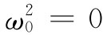

（32.40）
（32.40）在本章中我们对固体材料所建立的理论也可应用于像金属那种良导体，但要作很小的修正。在金属中，某些电子缺乏把它们维系在任何特定原子上的束缚力，而正是这种“自由”电子才引起了导电性。别的电子则被受束缚着，而上面的理论对这些电子是直接适用的。然而，这些束缚电子的影响往往被那些传导电子的效应所掩没，我们现在将只讨论自由电子的效应。
如果一个电子没有受到恢复力作用——但对其运动仍有某种阻力——则它的运动方程与式（32.1）的差别就仅在于缺少 那一项。所以在其余的推导过程中我们所必须做的一切就是令 ——此外还有一点不同。过去所以必须要在电介质中区别平均场与局部场，是因为在电介质中每个偶极子的位置是固定的，从而与其他偶极子位置就有确定的关系。但由于金属中的传导电子到处运动，作用于其上的场平均说来 恰好是平均场E。因此，我们利用式（32.28）对式（32.8）所做的修正，对于传导电子就不 应该做了。这样，金属的折射率公式，除了应令ω0 等于零之外，看来就应像式（32.27），即
这只是来自传导电子方面的贡献，但我们将假定对于金属来说这是主要项。
图32-2 一个自由电子的运动
现在我们甚至知道了怎样去找出用于表示γ的值，因为它与金属的电导率有关。在第1卷第43章中就曾讨论过金属的电导率如何起源于自由电子在穿越晶体中时的扩散。这些电子从一次散射至另一次散射遵循的是锯齿形路径，而在两次散射之间除了由于任意的平均电场所引起的加速之外，它们的运动是自由的（如图32-2所示）。在第1卷第43章中，我们曾求得平均漂移速度恰好等于加速度乘以两次碰撞间的平均时间τ。加速度为qe E/m，因而
（32.39）
这一公式曾假定E为常数，从而v漂移 就是一个恒定速度。由于没有平均加速度，所以阻尼力等于外加力。我们已用γmv表示阻尼力［见式（32.1）］而定义了γ，这个力应当等于qe E，因此就有
（32.40）
虽然我们不能轻易地直接测得τ，但仍可以通过测量金属的电导率来确定它。从实验上发现，金属中的电场E会产生一个密度为j的电流（对于各向同性材料而言）：
j=σE.
这个比例常数σ称为电导率 。这恰好就是我们从式（32.39）所预期的，只要令
j=Nqe v漂移 .
于是
（32.41）
所以τ——因而γ——就可以同观测到的电导率联系起来。利用式（32.40）与（32.41），还可以把折射率的公式（32.38）重新写成如下形式：
这是关于金属折射率的一个简便公式。